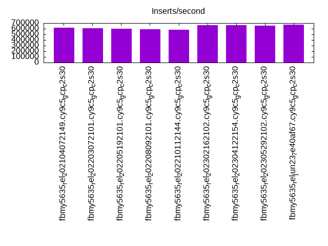
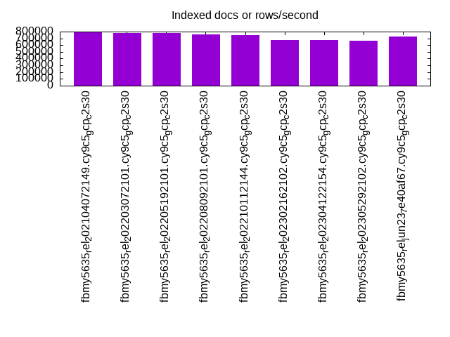
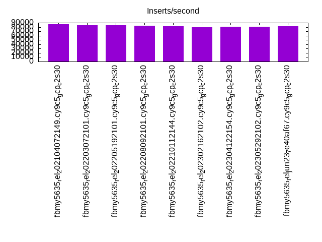
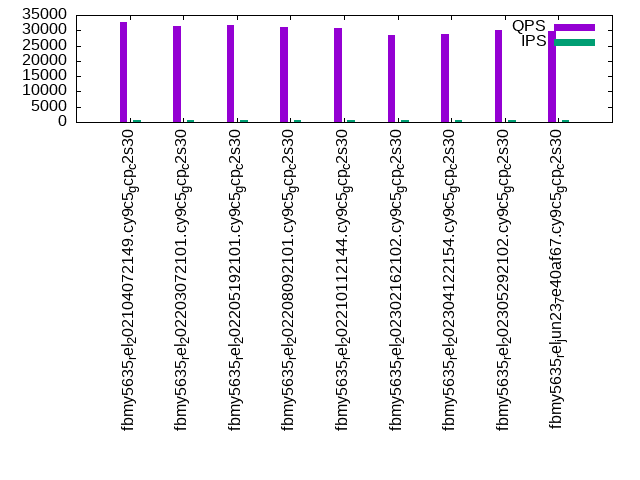
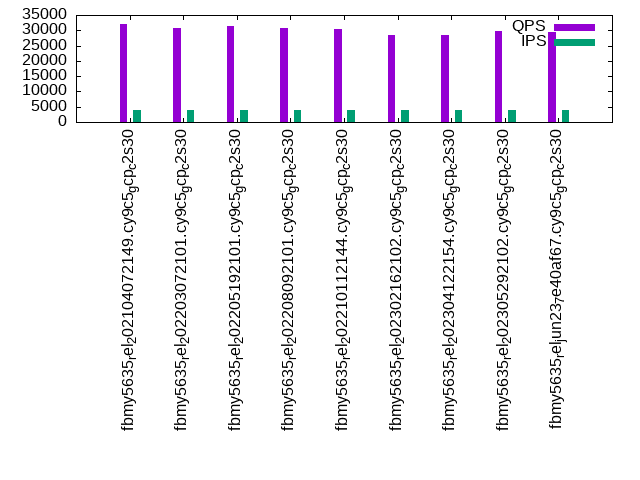
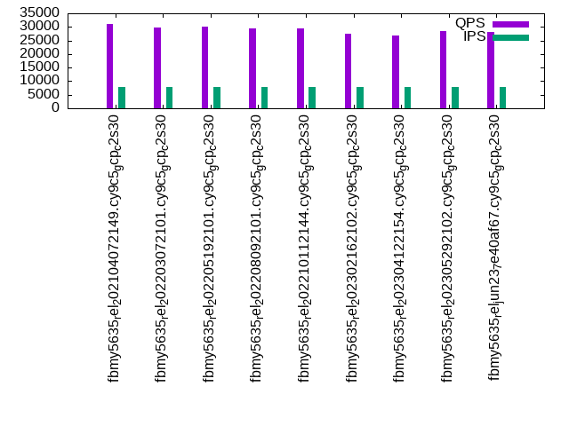

This is a report for the insert benchmark with 4000M docs and 8 client(s). It is generated by scripts (bash, awk, sed) and Tufte might not be impressed. An overview of the insert benchmark is here and a short update is here. Below, by DBMS, I mean DBMS+version.config. An example is my8020.c10b40 where my means MySQL, 8020 is version 8.0.20 and c10b40 is the name for the configuration file.
The test server is a c2-standard-30 from GCP with 15 cores, hyperthreads disabled, 120G RAM, XFS + SW RAID 0 on 4 NVMe devices (1.5TB). The benchmark was run with 8 client and there were 1 or 3 connections per client (1 for queries or inserts without rate limits, 1+1 for rate limited inserts+deletes). There are 8 tables, client per table. It loads 500M rows per table without secondary indexes, creates secondary indexes, then inserts 200M rows with a delete per insert to avoid growing the table. It then does 3 read+write tests for 3600s each that do queries as fast as possible with 100, 500 and then 1000 inserts/second/client concurrent with the queries and 1000 deletes/second to avoid growing the table. The database is larger than memory.
The tested DBMS are:
The numbers are inserts/s for l.i0 and l.i1, indexed docs (or rows) /s for l.x and queries/s for q*.2. The values are the average rate over the entire test for inserts (IPS) and queries (QPS). The range of values for IPS and QPS is split into 3 parts: bottom 25%, middle 50%, top 25%. Values in the bottom 25% have a red background, values in the top 25% have a green background and values in the middle have no color. A gray background is used for values that can be ignored because the DBMS did not sustain the target insert rate. Red backgrounds are not used when the minimum value is within 80% of the max value.
| dbms | l.i0 | l.x | l.i1 | q100.1 | q500.1 | q1000.1 |
|---|---|---|---|---|---|---|
| fbmy5635_rel_202104072149.cy9c5_gcp_c2s30 | 621214 | 794617 | 86843 | 32609 | 32125 | 31203 |
| fbmy5635_rel_202203072101.cy9c5_gcp_c2s30 | 609013 | 777171 | 84576 | 31312 | 30775 | 29663 |
| fbmy5635_rel_202205192101.cy9c5_gcp_c2s30 | 599610 | 774313 | 84348 | 31625 | 31261 | 30064 |
| fbmy5635_rel_202208092101.cy9c5_gcp_c2s30 | 594530 | 763524 | 82747 | 31045 | 30664 | 29576 |
| fbmy5635_rel_202210112144.cy9c5_gcp_c2s30 | 580383 | 745453 | 82372 | 30821 | 30536 | 29355 |
| fbmy5635_rel_202302162102.cy9c5_gcp_c2s30 | 665557 | 677409 | 79912 | 28588 | 28432 | 27347 |
| fbmy5635_rel_202304122154.cy9c5_gcp_c2s30 | 664894 | 674326 | 80281 | 28816 | 28312 | 26930 |
| fbmy5635_rel_202305292102.cy9c5_gcp_c2s30 | 655201 | 667017 | 80084 | 29964 | 29686 | 28549 |
| fbmy5635_rel_jun23_7e40af67.cy9c5_gcp_c2s30 | 671704 | 729679 | 81591 | 29626 | 29319 | 28134 |
This table has relative throughput, throughput for the DBMS relative to the DBMS in the first line, using the absolute throughput from the previous table. Values less than 0.95 have a yellow background. Values greater than 1.05 have a blue background.
| dbms | l.i0 | l.x | l.i1 | q100.1 | q500.1 | q1000.1 |
|---|---|---|---|---|---|---|
| fbmy5635_rel_202104072149.cy9c5_gcp_c2s30 | 1.00 | 1.00 | 1.00 | 1.00 | 1.00 | 1.00 |
| fbmy5635_rel_202203072101.cy9c5_gcp_c2s30 | 0.98 | 0.98 | 0.97 | 0.96 | 0.96 | 0.95 |
| fbmy5635_rel_202205192101.cy9c5_gcp_c2s30 | 0.97 | 0.97 | 0.97 | 0.97 | 0.97 | 0.96 |
| fbmy5635_rel_202208092101.cy9c5_gcp_c2s30 | 0.96 | 0.96 | 0.95 | 0.95 | 0.95 | 0.95 |
| fbmy5635_rel_202210112144.cy9c5_gcp_c2s30 | 0.93 | 0.94 | 0.95 | 0.95 | 0.95 | 0.94 |
| fbmy5635_rel_202302162102.cy9c5_gcp_c2s30 | 1.07 | 0.85 | 0.92 | 0.88 | 0.89 | 0.88 |
| fbmy5635_rel_202304122154.cy9c5_gcp_c2s30 | 1.07 | 0.85 | 0.92 | 0.88 | 0.88 | 0.86 |
| fbmy5635_rel_202305292102.cy9c5_gcp_c2s30 | 1.05 | 0.84 | 0.92 | 0.92 | 0.92 | 0.91 |
| fbmy5635_rel_jun23_7e40af67.cy9c5_gcp_c2s30 | 1.08 | 0.92 | 0.94 | 0.91 | 0.91 | 0.90 |
This lists the average rate of inserts/s for the tests that do inserts concurrent with queries. For such tests the query rate is listed in the table above. The read+write tests are setup so that the insert rate should match the target rate every second. Cells that are not at least 95% of the target have a red background to indicate a failure to satisfy the target.
| dbms | q100.1 | q500.1 | q1000.1 |
|---|---|---|---|
| fbmy5635_rel_202104072149.cy9c5_gcp_c2s30 | 797 | 3988 | 7973 |
| fbmy5635_rel_202203072101.cy9c5_gcp_c2s30 | 797 | 3987 | 7973 |
| fbmy5635_rel_202205192101.cy9c5_gcp_c2s30 | 797 | 3986 | 7971 |
| fbmy5635_rel_202208092101.cy9c5_gcp_c2s30 | 797 | 3987 | 7973 |
| fbmy5635_rel_202210112144.cy9c5_gcp_c2s30 | 797 | 3987 | 7973 |
| fbmy5635_rel_202302162102.cy9c5_gcp_c2s30 | 788 | 3945 | 7930 |
| fbmy5635_rel_202304122154.cy9c5_gcp_c2s30 | 786 | 3936 | 7914 |
| fbmy5635_rel_202305292102.cy9c5_gcp_c2s30 | 787 | 3939 | 7914 |
| fbmy5635_rel_jun23_7e40af67.cy9c5_gcp_c2s30 | 788 | 3940 | 7923 |
| target | 800 | 4000 | 8000 |
l.i0: load without secondary indexes. Graphs for performance per 1-second interval are here.
Average throughput:
Insert response time histogram: each cell has the percentage of responses that take <= the time in the header and max is the max response time in seconds. For the max column values in the top 25% of the range have a red background and in the bottom 25% of the range have a green background. The red background is not used when the min value is within 80% of the max value.
| dbms | 256us | 1ms | 4ms | 16ms | 64ms | 256ms | 1s | 4s | 16s | gt | max |
|---|---|---|---|---|---|---|---|---|---|---|---|
| fbmy5635_rel_202104072149.cy9c5_gcp_c2s30 | 16.967 | 82.979 | 0.037 | 0.002 | 0.013 | 0.001 | 0.444 | ||||
| fbmy5635_rel_202203072101.cy9c5_gcp_c2s30 | 15.602 | 84.343 | 0.038 | 0.003 | 0.013 | 0.002 | 0.389 | ||||
| fbmy5635_rel_202205192101.cy9c5_gcp_c2s30 | 14.066 | 85.881 | 0.036 | 0.003 | 0.013 | 0.001 | 0.405 | ||||
| fbmy5635_rel_202208092101.cy9c5_gcp_c2s30 | 14.230 | 85.719 | 0.035 | 0.002 | 0.013 | 0.001 | 0.437 | ||||
| fbmy5635_rel_202210112144.cy9c5_gcp_c2s30 | 13.500 | 86.445 | 0.039 | 0.002 | 0.013 | 0.002 | 0.442 | ||||
| fbmy5635_rel_202302162102.cy9c5_gcp_c2s30 | 34.106 | 65.860 | 0.017 | 0.002 | 0.014 | 0.001 | 0.390 | ||||
| fbmy5635_rel_202304122154.cy9c5_gcp_c2s30 | 34.046 | 65.922 | 0.016 | 0.001 | 0.014 | 0.001 | 0.415 | ||||
| fbmy5635_rel_202305292102.cy9c5_gcp_c2s30 | 29.169 | 70.797 | 0.018 | 0.002 | 0.014 | 0.001 | 0.418 | ||||
| fbmy5635_rel_jun23_7e40af67.cy9c5_gcp_c2s30 | 38.795 | 61.171 | 0.018 | 0.002 | 0.013 | 0.001 | 0.382 |
Performance metrics for the DBMS listed above. Some are normalized by throughput, others are not. Legend for results is here.
ips qps rps rmbps wps wmbps rpq rkbpq wpi wkbpi csps cpups cspq cpupq dbgb1 dbgb2 rss maxop p50 p99 tag 621214 0 1 0.2 877.3 188.7 0.000 0.000 0.001 0.311 75390 77.1 0.121 19 125.7 127.1 NA 0.444 79913 52643 4000m.fbmy5635_rel_202104072149.cy9c5_gcp_c2s30 609013 0 0 0.1 856.0 188.5 0.000 0.000 0.001 0.317 74558 76.7 0.122 19 125.7 127.3 NA 0.389 78315 51542 4000m.fbmy5635_rel_202203072101.cy9c5_gcp_c2s30 599610 0 1 0.2 838.1 183.3 0.000 0.000 0.001 0.313 74000 76.4 0.123 19 125.7 127.3 NA 0.405 77116 50963 4000m.fbmy5635_rel_202205192101.cy9c5_gcp_c2s30 594530 0 0 0.1 838.5 182.1 0.000 0.000 0.001 0.314 73167 76.4 0.123 19 125.9 127.4 NA 0.437 76416 50745 4000m.fbmy5635_rel_202208092101.cy9c5_gcp_c2s30 580383 0 0 0.1 809.9 174.5 0.000 0.000 0.001 0.308 71558 76.2 0.123 20 125.7 127.4 NA 0.442 74518 48764 4000m.fbmy5635_rel_202210112144.cy9c5_gcp_c2s30 665557 0 0 0.0 636.2 144.9 0.000 0.000 0.001 0.223 77939 75.9 0.117 17 124.4 125.9 NA 0.390 84508 57538 4000m.fbmy5635_rel_202302162102.cy9c5_gcp_c2s30 664894 0 0 0.0 628.6 144.0 0.000 0.000 0.001 0.222 77840 75.5 0.117 17 125.0 126.5 NA 0.415 84708 57937 4000m.fbmy5635_rel_202304122154.cy9c5_gcp_c2s30 655201 0 0 0.0 628.3 141.4 0.000 0.000 0.001 0.221 76334 76.1 0.117 17 125.3 126.8 NA 0.418 83626 55839 4000m.fbmy5635_rel_202305292102.cy9c5_gcp_c2s30 671704 0 0 0.0 645.4 146.2 0.000 0.000 0.001 0.223 78185 76.2 0.116 17 125.4 126.9 NA 0.382 85308 56439 4000m.fbmy5635_rel_jun23_7e40af67.cy9c5_gcp_c2s30
l.x: create secondary indexes.
Average throughput:
Performance metrics for the DBMS listed above. Some are normalized by throughput, others are not. Legend for results is here.
ips qps rps rmbps wps wmbps rpq rkbpq wpi wkbpi csps cpups cspq cpupq dbgb1 dbgb2 rss maxop p50 p99 tag 794617 0 628 126.7 312.0 90.6 0.001 0.163 0.000 0.117 2531 50.4 0.003 10 257.8 259.3 NA 0.002 NA NA 4000m.fbmy5635_rel_202104072149.cy9c5_gcp_c2s30 777171 0 558 113.2 304.1 85.1 0.001 0.149 0.000 0.112 2398 49.9 0.003 10 257.8 259.4 NA 0.003 NA NA 4000m.fbmy5635_rel_202203072101.cy9c5_gcp_c2s30 774313 0 591 116.2 300.1 86.5 0.001 0.154 0.000 0.114 2344 50.3 0.003 10 257.8 259.4 NA 0.002 NA NA 4000m.fbmy5635_rel_202205192101.cy9c5_gcp_c2s30 763524 0 558 110.6 295.2 85.2 0.001 0.148 0.000 0.114 2219 50.5 0.003 10 257.8 259.4 NA 0.003 NA NA 4000m.fbmy5635_rel_202208092101.cy9c5_gcp_c2s30 745453 0 540 108.2 289.7 83.2 0.001 0.149 0.000 0.114 2217 49.9 0.003 10 257.8 259.4 NA 0.006 NA NA 4000m.fbmy5635_rel_202210112144.cy9c5_gcp_c2s30 677409 0 504 101.8 260.2 77.1 0.001 0.154 0.000 0.117 1921 50.1 0.003 11 256.7 258.3 NA 0.007 NA NA 4000m.fbmy5635_rel_202302162102.cy9c5_gcp_c2s30 674326 0 493 99.1 258.4 75.6 0.001 0.150 0.000 0.115 1922 50.4 0.003 11 257.4 258.9 NA 0.003 NA NA 4000m.fbmy5635_rel_202304122154.cy9c5_gcp_c2s30 667017 0 496 99.8 256.3 74.6 0.001 0.153 0.000 0.115 1879 50.2 0.003 11 257.7 259.2 NA 0.004 NA NA 4000m.fbmy5635_rel_202305292102.cy9c5_gcp_c2s30 729679 0 524 106.7 279.2 81.8 0.001 0.150 0.000 0.115 2236 50.2 0.003 10 257.7 259.3 NA 0.003 NA NA 4000m.fbmy5635_rel_jun23_7e40af67.cy9c5_gcp_c2s30
l.i1: continue load after secondary indexes created. Graphs for performance per 1-second interval are here.
Average throughput:
Insert response time histogram: each cell has the percentage of responses that take <= the time in the header and max is the max response time in seconds. For the max column values in the top 25% of the range have a red background and in the bottom 25% of the range have a green background. The red background is not used when the min value is within 80% of the max value.
| dbms | 256us | 1ms | 4ms | 16ms | 64ms | 256ms | 1s | 4s | 16s | gt | max |
|---|---|---|---|---|---|---|---|---|---|---|---|
| fbmy5635_rel_202104072149.cy9c5_gcp_c2s30 | 0.094 | 36.577 | 63.165 | 0.151 | 0.011 | 0.002 | 0.424 | ||||
| fbmy5635_rel_202203072101.cy9c5_gcp_c2s30 | 0.050 | 32.498 | 67.276 | 0.165 | 0.009 | 0.002 | 0.462 | ||||
| fbmy5635_rel_202205192101.cy9c5_gcp_c2s30 | 0.019 | 29.587 | 70.230 | 0.152 | 0.010 | 0.002 | 0.391 | ||||
| fbmy5635_rel_202208092101.cy9c5_gcp_c2s30 | 0.039 | 28.375 | 71.425 | 0.152 | 0.008 | 0.002 | 0.446 | ||||
| fbmy5635_rel_202210112144.cy9c5_gcp_c2s30 | 0.033 | 28.100 | 71.704 | 0.153 | 0.008 | 0.001 | 0.449 | ||||
| fbmy5635_rel_202302162102.cy9c5_gcp_c2s30 | 0.063 | 26.669 | 73.097 | 0.164 | 0.007 | 0.001 | 0.426 | ||||
| fbmy5635_rel_202304122154.cy9c5_gcp_c2s30 | 0.065 | 26.151 | 73.614 | 0.161 | 0.008 | 0.001 | 0.416 | ||||
| fbmy5635_rel_202305292102.cy9c5_gcp_c2s30 | 0.112 | 26.583 | 73.136 | 0.162 | 0.007 | 0.001 | 0.467 | ||||
| fbmy5635_rel_jun23_7e40af67.cy9c5_gcp_c2s30 | 0.113 | 28.770 | 70.949 | 0.160 | 0.008 | 0.001 | 0.447 |
Delete response time histogram: each cell has the percentage of responses that take <= the time in the header and max is the max response time in seconds. For the max column values in the top 25% of the range have a red background and in the bottom 25% of the range have a green background. The red background is not used when the min value is within 80% of the max value.
| dbms | 256us | 1ms | 4ms | 16ms | 64ms | 256ms | 1s | 4s | 16s | gt | max |
|---|---|---|---|---|---|---|---|---|---|---|---|
| fbmy5635_rel_202104072149.cy9c5_gcp_c2s30 | 0.084 | 32.906 | 66.654 | 0.328 | 0.024 | 0.003 | 0.423 | ||||
| fbmy5635_rel_202203072101.cy9c5_gcp_c2s30 | 0.043 | 30.531 | 69.046 | 0.354 | 0.024 | 0.002 | 0.481 | ||||
| fbmy5635_rel_202205192101.cy9c5_gcp_c2s30 | 0.015 | 28.681 | 70.985 | 0.296 | 0.021 | 0.002 | 0.395 | ||||
| fbmy5635_rel_202208092101.cy9c5_gcp_c2s30 | 0.047 | 26.836 | 72.767 | 0.327 | 0.022 | 0.002 | 0.521 | ||||
| fbmy5635_rel_202210112144.cy9c5_gcp_c2s30 | 0.035 | 26.225 | 73.401 | 0.318 | 0.020 | 0.002 | 0.458 | ||||
| fbmy5635_rel_202302162102.cy9c5_gcp_c2s30 | 0.060 | 23.764 | 75.812 | 0.341 | 0.023 | 0.001 | 0.428 | ||||
| fbmy5635_rel_202304122154.cy9c5_gcp_c2s30 | 0.068 | 24.480 | 75.102 | 0.326 | 0.024 | 0.001 | 0.487 | ||||
| fbmy5635_rel_202305292102.cy9c5_gcp_c2s30 | 0.121 | 23.974 | 75.545 | 0.337 | 0.021 | 0.001 | 0.477 | ||||
| fbmy5635_rel_jun23_7e40af67.cy9c5_gcp_c2s30 | 0.090 | 25.978 | 73.573 | 0.334 | 0.024 | 0.001 | 0.468 |
Performance metrics for the DBMS listed above. Some are normalized by throughput, others are not. Legend for results is here.
ips qps rps rmbps wps wmbps rpq rkbpq wpi wkbpi csps cpups cspq cpupq dbgb1 dbgb2 rss maxop p50 p99 tag 86843 0 518 71.0 921.1 178.1 0.006 0.837 0.011 2.100 61626 63.8 0.710 110 280.7 282.5 NA 0.424 11038 8191 4000m.fbmy5635_rel_202104072149.cy9c5_gcp_c2s30 84576 0 516 69.8 939.1 182.4 0.006 0.845 0.011 2.208 59850 64.3 0.708 114 278.9 279.1 NA 0.462 10788 7991 4000m.fbmy5635_rel_202203072101.cy9c5_gcp_c2s30 84348 0 467 67.8 883.1 172.9 0.006 0.823 0.010 2.099 60634 63.6 0.719 113 282.1 282.3 NA 0.391 10642 7993 4000m.fbmy5635_rel_202205192101.cy9c5_gcp_c2s30 82747 0 504 67.9 876.7 171.3 0.006 0.840 0.011 2.120 59840 63.4 0.723 115 278.6 278.9 NA 0.446 10539 7991 4000m.fbmy5635_rel_202208092101.cy9c5_gcp_c2s30 82372 0 486 66.9 865.7 170.1 0.006 0.831 0.011 2.115 58506 65.1 0.710 119 279.8 280.0 NA 0.449 10488 7991 4000m.fbmy5635_rel_202210112144.cy9c5_gcp_c2s30 79912 0 454 51.5 757.1 144.5 0.006 0.660 0.009 1.852 53729 63.7 0.672 120 284.7 284.9 NA 0.426 10093 6795 4000m.fbmy5635_rel_202302162102.cy9c5_gcp_c2s30 80281 0 459 51.7 752.9 143.5 0.006 0.660 0.009 1.831 53794 63.6 0.670 119 284.5 284.7 NA 0.416 10143 6842 4000m.fbmy5635_rel_202304122154.cy9c5_gcp_c2s30 80084 0 458 51.3 747.5 142.0 0.006 0.656 0.009 1.816 52024 65.8 0.650 123 285.1 285.3 NA 0.467 10039 6942 4000m.fbmy5635_rel_202305292102.cy9c5_gcp_c2s30 81591 0 467 52.5 766.6 145.4 0.006 0.659 0.009 1.825 53679 64.8 0.658 119 284.5 284.7 NA 0.447 10289 6945 4000m.fbmy5635_rel_jun23_7e40af67.cy9c5_gcp_c2s30
q100.1: range queries with 100 insert/s per client. Graphs for performance per 1-second interval are here.
Average throughput:
Query response time histogram: each cell has the percentage of responses that take <= the time in the header and max is the max response time in seconds. For max values in the top 25% of the range have a red background and in the bottom 25% of the range have a green background. The red background is not used when the min value is within 80% of the max value.
| dbms | 256us | 1ms | 4ms | 16ms | 64ms | 256ms | 1s | 4s | 16s | gt | max |
|---|---|---|---|---|---|---|---|---|---|---|---|
| fbmy5635_rel_202104072149.cy9c5_gcp_c2s30 | 74.648 | 25.239 | 0.113 | nonzero | nonzero | nonzero | nonzero | 0.326 | |||
| fbmy5635_rel_202203072101.cy9c5_gcp_c2s30 | 70.497 | 29.397 | 0.105 | 0.001 | nonzero | nonzero | 0.078 | ||||
| fbmy5635_rel_202205192101.cy9c5_gcp_c2s30 | 72.298 | 27.600 | 0.101 | nonzero | nonzero | 0.054 | |||||
| fbmy5635_rel_202208092101.cy9c5_gcp_c2s30 | 68.552 | 31.342 | 0.106 | nonzero | nonzero | nonzero | 0.117 | ||||
| fbmy5635_rel_202210112144.cy9c5_gcp_c2s30 | 68.187 | 31.678 | 0.134 | 0.001 | nonzero | nonzero | 0.085 | ||||
| fbmy5635_rel_202302162102.cy9c5_gcp_c2s30 | 58.524 | 41.198 | 0.277 | 0.001 | nonzero | nonzero | 0.138 | ||||
| fbmy5635_rel_202304122154.cy9c5_gcp_c2s30 | 60.562 | 39.183 | 0.255 | nonzero | nonzero | nonzero | 0.100 | ||||
| fbmy5635_rel_202305292102.cy9c5_gcp_c2s30 | 66.222 | 33.534 | 0.243 | 0.001 | nonzero | 0.059 | |||||
| fbmy5635_rel_jun23_7e40af67.cy9c5_gcp_c2s30 | 64.372 | 35.376 | 0.251 | 0.001 | nonzero | nonzero | 0.071 |
Insert response time histogram: each cell has the percentage of responses that take <= the time in the header and max is the max response time in seconds. For max values in the top 25% of the range have a red background and in the bottom 25% of the range have a green background. The red background is not used when the min value is within 80% of the max value.
| dbms | 256us | 1ms | 4ms | 16ms | 64ms | 256ms | 1s | 4s | 16s | gt | max |
|---|---|---|---|---|---|---|---|---|---|---|---|
| fbmy5635_rel_202104072149.cy9c5_gcp_c2s30 | 7.700 | 92.269 | 0.021 | 0.007 | 0.003 | 0.092 | |||||
| fbmy5635_rel_202203072101.cy9c5_gcp_c2s30 | 2.507 | 97.458 | 0.031 | 0.003 | 0.031 | ||||||
| fbmy5635_rel_202205192101.cy9c5_gcp_c2s30 | 2.050 | 97.932 | 0.017 | 0.012 | |||||||
| fbmy5635_rel_202208092101.cy9c5_gcp_c2s30 | 1.448 | 98.516 | 0.035 | 0.002 | 0.034 | ||||||
| fbmy5635_rel_202210112144.cy9c5_gcp_c2s30 | 1.443 | 98.497 | 0.059 | 0.002 | 0.032 | ||||||
| fbmy5635_rel_202302162102.cy9c5_gcp_c2s30 | 2.366 | 97.583 | 0.040 | 0.010 | 0.049 | ||||||
| fbmy5635_rel_202304122154.cy9c5_gcp_c2s30 | 0.639 | 98.467 | 0.863 | 0.031 | 0.026 | ||||||
| fbmy5635_rel_202305292102.cy9c5_gcp_c2s30 | 2.389 | 95.733 | 1.840 | 0.038 | 0.048 | ||||||
| fbmy5635_rel_jun23_7e40af67.cy9c5_gcp_c2s30 | 2.745 | 96.797 | 0.444 | 0.014 | 0.026 |
Delete response time histogram: each cell has the percentage of responses that take <= the time in the header and max is the max response time in seconds. For max values in the top 25% of the range have a red background and in the bottom 25% of the range have a green background. The red background is not used when the min value is within 80% of the max value.
| dbms | 256us | 1ms | 4ms | 16ms | 64ms | 256ms | 1s | 4s | 16s | gt | max |
|---|---|---|---|---|---|---|---|---|---|---|---|
| fbmy5635_rel_202104072149.cy9c5_gcp_c2s30 | 7.868 | 92.083 | 0.035 | 0.010 | 0.003 | 0.092 | |||||
| fbmy5635_rel_202203072101.cy9c5_gcp_c2s30 | 2.470 | 97.446 | 0.076 | 0.007 | 0.041 | ||||||
| fbmy5635_rel_202205192101.cy9c5_gcp_c2s30 | 3.854 | 96.071 | 0.071 | 0.003 | 0.019 | ||||||
| fbmy5635_rel_202208092101.cy9c5_gcp_c2s30 | 2.283 | 97.656 | 0.059 | 0.002 | 0.034 | ||||||
| fbmy5635_rel_202210112144.cy9c5_gcp_c2s30 | 1.413 | 98.512 | 0.071 | 0.003 | 0.032 | ||||||
| fbmy5635_rel_202302162102.cy9c5_gcp_c2s30 | 2.427 | 97.438 | 0.123 | 0.010 | 0.002 | 0.071 | |||||
| fbmy5635_rel_202304122154.cy9c5_gcp_c2s30 | 1.168 | 97.814 | 0.986 | 0.031 | 0.026 | ||||||
| fbmy5635_rel_202305292102.cy9c5_gcp_c2s30 | 3.523 | 94.420 | 2.010 | 0.047 | 0.048 | ||||||
| fbmy5635_rel_jun23_7e40af67.cy9c5_gcp_c2s30 | 2.823 | 96.587 | 0.571 | 0.019 | 0.027 |
Performance metrics for the DBMS listed above. Some are normalized by throughput, others are not. Legend for results is here.
ips qps rps rmbps wps wmbps rpq rkbpq wpi wkbpi csps cpups cspq cpupq dbgb1 dbgb2 rss maxop p50 p99 tag 797 32609 851 8.0 17.6 2.6 0.026 0.252 0.022 3.331 129053 52.6 3.958 242 277.7 278.0 NA 0.326 4171 2238 4000m.fbmy5635_rel_202104072149.cy9c5_gcp_c2s30 797 31312 801 8.0 19.6 2.8 0.026 0.260 0.025 3.654 124908 52.6 3.989 252 277.6 278.4 NA 0.078 3996 2078 4000m.fbmy5635_rel_202203072101.cy9c5_gcp_c2s30 797 31625 753 6.9 17.5 2.7 0.024 0.223 0.022 3.437 125569 52.6 3.971 249 277.4 278.3 NA 0.054 3996 2047 4000m.fbmy5635_rel_202205192101.cy9c5_gcp_c2s30 797 31045 790 7.6 19.9 2.9 0.025 0.249 0.025 3.705 123833 52.6 3.989 254 277.3 278.1 NA 0.117 3964 2190 4000m.fbmy5635_rel_202208092101.cy9c5_gcp_c2s30 797 30821 807 7.5 21.2 2.7 0.026 0.248 0.027 3.471 123226 52.5 3.998 256 277.6 278.4 NA 0.085 3916 2030 4000m.fbmy5635_rel_202210112144.cy9c5_gcp_c2s30 788 28588 953 10.1 18.6 2.6 0.033 0.362 0.024 3.320 114678 51.9 4.011 272 283.1 283.9 NA 0.138 3740 1982 4000m.fbmy5635_rel_202302162102.cy9c5_gcp_c2s30 786 28816 962 10.1 16.2 2.5 0.033 0.359 0.021 3.289 115345 51.7 4.003 269 283.4 284.2 NA 0.100 3725 1902 4000m.fbmy5635_rel_202304122154.cy9c5_gcp_c2s30 787 29964 943 10.4 21.0 3.0 0.031 0.357 0.027 3.899 118634 52.1 3.959 261 283.3 284.1 NA 0.059 3933 2095 4000m.fbmy5635_rel_202305292102.cy9c5_gcp_c2s30 788 29626 951 9.9 16.7 2.3 0.032 0.343 0.021 3.019 117753 51.9 3.975 263 283.2 284.1 NA 0.071 3853 1807 4000m.fbmy5635_rel_jun23_7e40af67.cy9c5_gcp_c2s30
q500.1: range queries with 500 insert/s per client. Graphs for performance per 1-second interval are here.
Average throughput:
Query response time histogram: each cell has the percentage of responses that take <= the time in the header and max is the max response time in seconds. For max values in the top 25% of the range have a red background and in the bottom 25% of the range have a green background. The red background is not used when the min value is within 80% of the max value.
| dbms | 256us | 1ms | 4ms | 16ms | 64ms | 256ms | 1s | 4s | 16s | gt | max |
|---|---|---|---|---|---|---|---|---|---|---|---|
| fbmy5635_rel_202104072149.cy9c5_gcp_c2s30 | 70.467 | 29.525 | 0.007 | nonzero | nonzero | 0.036 | |||||
| fbmy5635_rel_202203072101.cy9c5_gcp_c2s30 | 64.405 | 35.587 | 0.007 | nonzero | nonzero | 0.037 | |||||
| fbmy5635_rel_202205192101.cy9c5_gcp_c2s30 | 67.236 | 32.756 | 0.007 | nonzero | nonzero | 0.040 | |||||
| fbmy5635_rel_202208092101.cy9c5_gcp_c2s30 | 63.333 | 36.659 | 0.007 | nonzero | nonzero | 0.035 | |||||
| fbmy5635_rel_202210112144.cy9c5_gcp_c2s30 | 63.102 | 36.890 | 0.007 | nonzero | nonzero | 0.063 | |||||
| fbmy5635_rel_202302162102.cy9c5_gcp_c2s30 | 50.336 | 49.653 | 0.011 | nonzero | 0.001 | 0.039 | |||||
| fbmy5635_rel_202304122154.cy9c5_gcp_c2s30 | 51.397 | 48.593 | 0.010 | nonzero | 0.001 | 0.045 | |||||
| fbmy5635_rel_202305292102.cy9c5_gcp_c2s30 | 60.957 | 39.029 | 0.013 | nonzero | nonzero | 0.044 | |||||
| fbmy5635_rel_jun23_7e40af67.cy9c5_gcp_c2s30 | 58.032 | 41.957 | 0.010 | nonzero | nonzero | 0.034 |
Insert response time histogram: each cell has the percentage of responses that take <= the time in the header and max is the max response time in seconds. For max values in the top 25% of the range have a red background and in the bottom 25% of the range have a green background. The red background is not used when the min value is within 80% of the max value.
| dbms | 256us | 1ms | 4ms | 16ms | 64ms | 256ms | 1s | 4s | 16s | gt | max |
|---|---|---|---|---|---|---|---|---|---|---|---|
| fbmy5635_rel_202104072149.cy9c5_gcp_c2s30 | 24.896 | 75.077 | 0.027 | nonzero | 0.031 | ||||||
| fbmy5635_rel_202203072101.cy9c5_gcp_c2s30 | 9.218 | 90.747 | 0.035 | 0.014 | |||||||
| fbmy5635_rel_202205192101.cy9c5_gcp_c2s30 | 6.815 | 93.138 | 0.045 | 0.002 | 0.035 | ||||||
| fbmy5635_rel_202208092101.cy9c5_gcp_c2s30 | 3.868 | 96.102 | 0.028 | 0.002 | 0.036 | ||||||
| fbmy5635_rel_202210112144.cy9c5_gcp_c2s30 | 2.950 | 97.020 | 0.028 | 0.002 | 0.036 | ||||||
| fbmy5635_rel_202302162102.cy9c5_gcp_c2s30 | 7.669 | 92.206 | 0.123 | 0.002 | 0.022 | ||||||
| fbmy5635_rel_202304122154.cy9c5_gcp_c2s30 | 5.682 | 94.269 | 0.048 | 0.001 | nonzero | 0.079 | |||||
| fbmy5635_rel_202305292102.cy9c5_gcp_c2s30 | 4.668 | 85.272 | 10.045 | 0.015 | 0.031 | ||||||
| fbmy5635_rel_jun23_7e40af67.cy9c5_gcp_c2s30 | 4.763 | 95.057 | 0.180 | nonzero | 0.017 |
Delete response time histogram: each cell has the percentage of responses that take <= the time in the header and max is the max response time in seconds. For max values in the top 25% of the range have a red background and in the bottom 25% of the range have a green background. The red background is not used when the min value is within 80% of the max value.
| dbms | 256us | 1ms | 4ms | 16ms | 64ms | 256ms | 1s | 4s | 16s | gt | max |
|---|---|---|---|---|---|---|---|---|---|---|---|
| fbmy5635_rel_202104072149.cy9c5_gcp_c2s30 | 23.625 | 76.285 | 0.084 | 0.006 | 0.042 | ||||||
| fbmy5635_rel_202203072101.cy9c5_gcp_c2s30 | 11.218 | 88.700 | 0.073 | 0.009 | 0.043 | ||||||
| fbmy5635_rel_202205192101.cy9c5_gcp_c2s30 | 13.158 | 86.761 | 0.075 | 0.006 | 0.049 | ||||||
| fbmy5635_rel_202208092101.cy9c5_gcp_c2s30 | 6.635 | 93.273 | 0.086 | 0.005 | 0.040 | ||||||
| fbmy5635_rel_202210112144.cy9c5_gcp_c2s30 | 5.451 | 94.466 | 0.077 | 0.006 | 0.041 | ||||||
| fbmy5635_rel_202302162102.cy9c5_gcp_c2s30 | 9.024 | 90.816 | 0.155 | 0.006 | 0.038 | ||||||
| fbmy5635_rel_202304122154.cy9c5_gcp_c2s30 | 9.734 | 90.193 | 0.068 | 0.005 | nonzero | 0.079 | |||||
| fbmy5635_rel_202305292102.cy9c5_gcp_c2s30 | 6.406 | 83.773 | 9.797 | 0.024 | 0.056 | ||||||
| fbmy5635_rel_jun23_7e40af67.cy9c5_gcp_c2s30 | 8.654 | 91.123 | 0.218 | 0.004 | nonzero | 0.069 |
Performance metrics for the DBMS listed above. Some are normalized by throughput, others are not. Legend for results is here.
ips qps rps rmbps wps wmbps rpq rkbpq wpi wkbpi csps cpups cspq cpupq dbgb1 dbgb2 rss maxop p50 p99 tag 3988 32125 81 3.3 54.6 9.7 0.003 0.104 0.014 2.479 127366 55.5 3.965 259 277.7 279.1 NA 0.036 4012 3548 4000m.fbmy5635_rel_202104072149.cy9c5_gcp_c2s30 3987 30775 84 3.5 51.8 8.8 0.003 0.118 0.013 2.268 123647 55.4 4.018 270 277.7 279.6 NA 0.037 3868 3436 4000m.fbmy5635_rel_202203072101.cy9c5_gcp_c2s30 3986 31261 90 3.5 55.1 9.7 0.003 0.116 0.014 2.489 124405 55.7 3.980 267 277.3 279.2 NA 0.040 3917 3452 4000m.fbmy5635_rel_202205192101.cy9c5_gcp_c2s30 3987 30664 80 3.3 55.9 9.4 0.003 0.110 0.014 2.424 122652 55.6 4.000 272 277.4 279.3 NA 0.035 3836 3372 4000m.fbmy5635_rel_202208092101.cy9c5_gcp_c2s30 3987 30536 94 3.4 56.0 9.3 0.003 0.114 0.014 2.378 122454 55.6 4.010 273 277.9 279.9 NA 0.063 3836 3390 4000m.fbmy5635_rel_202210112144.cy9c5_gcp_c2s30 3945 28432 94 3.9 48.2 7.7 0.003 0.139 0.012 1.996 113803 55.2 4.003 291 283.2 285.1 NA 0.039 3596 3070 4000m.fbmy5635_rel_202302162102.cy9c5_gcp_c2s30 3936 28312 95 4.3 48.0 7.8 0.003 0.157 0.012 2.033 113350 55.1 4.004 292 283.4 285.3 NA 0.045 3628 3070 4000m.fbmy5635_rel_202304122154.cy9c5_gcp_c2s30 3939 29686 93 4.3 48.9 7.9 0.003 0.149 0.012 2.048 116934 55.2 3.939 279 283.3 285.2 NA 0.044 3788 3212 4000m.fbmy5635_rel_202305292102.cy9c5_gcp_c2s30 3940 29319 92 4.3 49.3 8.3 0.003 0.150 0.013 2.168 116013 55.2 3.957 282 283.3 285.2 NA 0.034 3724 3182 4000m.fbmy5635_rel_jun23_7e40af67.cy9c5_gcp_c2s30
q1000.1: range queries with 1000 insert/s per client. Graphs for performance per 1-second interval are here.
Average throughput:
Query response time histogram: each cell has the percentage of responses that take <= the time in the header and max is the max response time in seconds. For max values in the top 25% of the range have a red background and in the bottom 25% of the range have a green background. The red background is not used when the min value is within 80% of the max value.
| dbms | 256us | 1ms | 4ms | 16ms | 64ms | 256ms | 1s | 4s | 16s | gt | max |
|---|---|---|---|---|---|---|---|---|---|---|---|
| fbmy5635_rel_202104072149.cy9c5_gcp_c2s30 | 65.387 | 34.598 | 0.015 | 0.001 | nonzero | 0.034 | |||||
| fbmy5635_rel_202203072101.cy9c5_gcp_c2s30 | 55.928 | 44.055 | 0.016 | nonzero | nonzero | 0.054 | |||||
| fbmy5635_rel_202205192101.cy9c5_gcp_c2s30 | 58.619 | 41.365 | 0.015 | nonzero | nonzero | nonzero | 0.073 | ||||
| fbmy5635_rel_202208092101.cy9c5_gcp_c2s30 | 55.513 | 44.470 | 0.016 | nonzero | nonzero | 0.040 | |||||
| fbmy5635_rel_202210112144.cy9c5_gcp_c2s30 | 53.509 | 46.476 | 0.015 | 0.001 | nonzero | 0.051 | |||||
| fbmy5635_rel_202302162102.cy9c5_gcp_c2s30 | 38.200 | 61.777 | 0.022 | 0.001 | nonzero | nonzero | 0.074 | ||||
| fbmy5635_rel_202304122154.cy9c5_gcp_c2s30 | 36.974 | 63.001 | 0.024 | 0.001 | nonzero | 0.047 | |||||
| fbmy5635_rel_202305292102.cy9c5_gcp_c2s30 | 51.287 | 48.677 | 0.035 | 0.001 | nonzero | nonzero | 0.093 | ||||
| fbmy5635_rel_jun23_7e40af67.cy9c5_gcp_c2s30 | 47.222 | 52.755 | 0.022 | nonzero | nonzero | 0.049 |
Insert response time histogram: each cell has the percentage of responses that take <= the time in the header and max is the max response time in seconds. For max values in the top 25% of the range have a red background and in the bottom 25% of the range have a green background. The red background is not used when the min value is within 80% of the max value.
| dbms | 256us | 1ms | 4ms | 16ms | 64ms | 256ms | 1s | 4s | 16s | gt | max |
|---|---|---|---|---|---|---|---|---|---|---|---|
| fbmy5635_rel_202104072149.cy9c5_gcp_c2s30 | 26.181 | 73.754 | 0.064 | 0.001 | 0.025 | ||||||
| fbmy5635_rel_202203072101.cy9c5_gcp_c2s30 | 5.716 | 93.884 | 0.396 | 0.005 | 0.034 | ||||||
| fbmy5635_rel_202205192101.cy9c5_gcp_c2s30 | 4.997 | 94.893 | 0.108 | 0.002 | 0.025 | ||||||
| fbmy5635_rel_202208092101.cy9c5_gcp_c2s30 | 2.777 | 96.782 | 0.436 | 0.005 | 0.027 | ||||||
| fbmy5635_rel_202210112144.cy9c5_gcp_c2s30 | 2.168 | 97.772 | 0.060 | 0.001 | 0.026 | ||||||
| fbmy5635_rel_202302162102.cy9c5_gcp_c2s30 | 5.357 | 93.791 | 0.843 | 0.009 | 0.030 | ||||||
| fbmy5635_rel_202304122154.cy9c5_gcp_c2s30 | 1.962 | 94.394 | 3.634 | 0.010 | 0.028 | ||||||
| fbmy5635_rel_202305292102.cy9c5_gcp_c2s30 | 2.395 | 69.191 | 28.376 | 0.038 | 0.030 | ||||||
| fbmy5635_rel_jun23_7e40af67.cy9c5_gcp_c2s30 | 5.468 | 92.149 | 2.369 | 0.015 | 0.034 |
Delete response time histogram: each cell has the percentage of responses that take <= the time in the header and max is the max response time in seconds. For max values in the top 25% of the range have a red background and in the bottom 25% of the range have a green background. The red background is not used when the min value is within 80% of the max value.
| dbms | 256us | 1ms | 4ms | 16ms | 64ms | 256ms | 1s | 4s | 16s | gt | max |
|---|---|---|---|---|---|---|---|---|---|---|---|
| fbmy5635_rel_202104072149.cy9c5_gcp_c2s30 | 25.385 | 74.465 | 0.141 | 0.008 | 0.051 | ||||||
| fbmy5635_rel_202203072101.cy9c5_gcp_c2s30 | 6.148 | 93.374 | 0.464 | 0.014 | 0.042 | ||||||
| fbmy5635_rel_202205192101.cy9c5_gcp_c2s30 | 8.160 | 91.633 | 0.200 | 0.007 | 0.059 | ||||||
| fbmy5635_rel_202208092101.cy9c5_gcp_c2s30 | 5.778 | 93.665 | 0.544 | 0.012 | 0.047 | ||||||
| fbmy5635_rel_202210112144.cy9c5_gcp_c2s30 | 4.357 | 95.487 | 0.146 | 0.010 | 0.051 | ||||||
| fbmy5635_rel_202302162102.cy9c5_gcp_c2s30 | 7.397 | 91.710 | 0.877 | 0.016 | 0.044 | ||||||
| fbmy5635_rel_202304122154.cy9c5_gcp_c2s30 | 4.494 | 91.822 | 3.667 | 0.017 | nonzero | 0.075 | |||||
| fbmy5635_rel_202305292102.cy9c5_gcp_c2s30 | 3.988 | 67.875 | 28.086 | 0.050 | 0.001 | 0.072 | |||||
| fbmy5635_rel_jun23_7e40af67.cy9c5_gcp_c2s30 | 7.879 | 89.668 | 2.430 | 0.023 | nonzero | 0.088 |
Performance metrics for the DBMS listed above. Some are normalized by throughput, others are not. Legend for results is here.
ips qps rps rmbps wps wmbps rpq rkbpq wpi wkbpi csps cpups cspq cpupq dbgb1 dbgb2 rss maxop p50 p99 tag 7973 31203 125 5.8 108.1 18.2 0.004 0.192 0.014 2.333 125673 58.7 4.028 282 277.7 279.3 NA 0.034 3900 3436 4000m.fbmy5635_rel_202104072149.cy9c5_gcp_c2s30 7973 29663 122 6.2 106.5 18.2 0.004 0.215 0.013 2.333 121245 58.8 4.087 297 278.0 278.1 NA 0.054 3740 3292 4000m.fbmy5635_rel_202203072101.cy9c5_gcp_c2s30 7971 30064 111 6.0 107.9 18.5 0.004 0.204 0.014 2.380 121527 58.9 4.042 294 277.3 277.3 NA 0.073 3740 3308 4000m.fbmy5635_rel_202205192101.cy9c5_gcp_c2s30 7973 29576 117 6.0 110.2 18.4 0.004 0.208 0.014 2.360 119951 59.0 4.056 299 277.3 277.4 NA 0.040 3692 3260 4000m.fbmy5635_rel_202208092101.cy9c5_gcp_c2s30 7973 29355 126 6.1 111.2 18.4 0.004 0.214 0.014 2.366 120288 59.1 4.098 302 277.5 277.6 NA 0.051 3692 3244 4000m.fbmy5635_rel_202210112144.cy9c5_gcp_c2s30 7930 27347 115 5.0 95.9 15.9 0.004 0.188 0.012 2.048 110577 59.0 4.043 324 283.3 283.4 NA 0.074 3468 2957 4000m.fbmy5635_rel_202302162102.cy9c5_gcp_c2s30 7914 26930 116 5.2 97.3 15.8 0.004 0.198 0.012 2.046 109249 59.1 4.057 329 283.4 283.5 NA 0.047 3452 2910 4000m.fbmy5635_rel_202304122154.cy9c5_gcp_c2s30 7914 28549 130 5.5 96.1 16.0 0.005 0.198 0.012 2.066 113125 59.3 3.962 312 283.7 283.8 NA 0.093 3612 3053 4000m.fbmy5635_rel_202305292102.cy9c5_gcp_c2s30 7923 28134 121 5.2 96.4 16.0 0.004 0.190 0.012 2.068 112256 59.1 3.990 315 283.4 283.4 NA 0.049 3581 3054 4000m.fbmy5635_rel_jun23_7e40af67.cy9c5_gcp_c2s30
l.i0: load without secondary indexes
Performance metrics for all DBMS, not just the ones listed above. Some are normalized by throughput, others are not. Legend for results is here.
ips qps rps rmbps wps wmbps rpq rkbpq wpi wkbpi csps cpups cspq cpupq dbgb1 dbgb2 rss maxop p50 p99 tag 621214 0 1 0.2 877.3 188.7 0.000 0.000 0.001 0.311 75390 77.1 0.121 19 125.7 127.1 NA 0.444 79913 52643 4000m.fbmy5635_rel_202104072149.cy9c5_gcp_c2s30 609013 0 0 0.1 856.0 188.5 0.000 0.000 0.001 0.317 74558 76.7 0.122 19 125.7 127.3 NA 0.389 78315 51542 4000m.fbmy5635_rel_202203072101.cy9c5_gcp_c2s30 599610 0 1 0.2 838.1 183.3 0.000 0.000 0.001 0.313 74000 76.4 0.123 19 125.7 127.3 NA 0.405 77116 50963 4000m.fbmy5635_rel_202205192101.cy9c5_gcp_c2s30 594530 0 0 0.1 838.5 182.1 0.000 0.000 0.001 0.314 73167 76.4 0.123 19 125.9 127.4 NA 0.437 76416 50745 4000m.fbmy5635_rel_202208092101.cy9c5_gcp_c2s30 580383 0 0 0.1 809.9 174.5 0.000 0.000 0.001 0.308 71558 76.2 0.123 20 125.7 127.4 NA 0.442 74518 48764 4000m.fbmy5635_rel_202210112144.cy9c5_gcp_c2s30 665557 0 0 0.0 636.2 144.9 0.000 0.000 0.001 0.223 77939 75.9 0.117 17 124.4 125.9 NA 0.390 84508 57538 4000m.fbmy5635_rel_202302162102.cy9c5_gcp_c2s30 664894 0 0 0.0 628.6 144.0 0.000 0.000 0.001 0.222 77840 75.5 0.117 17 125.0 126.5 NA 0.415 84708 57937 4000m.fbmy5635_rel_202304122154.cy9c5_gcp_c2s30 655201 0 0 0.0 628.3 141.4 0.000 0.000 0.001 0.221 76334 76.1 0.117 17 125.3 126.8 NA 0.418 83626 55839 4000m.fbmy5635_rel_202305292102.cy9c5_gcp_c2s30 671704 0 0 0.0 645.4 146.2 0.000 0.000 0.001 0.223 78185 76.2 0.116 17 125.4 126.9 NA 0.382 85308 56439 4000m.fbmy5635_rel_jun23_7e40af67.cy9c5_gcp_c2s30
l.x: create secondary indexes
Performance metrics for all DBMS, not just the ones listed above. Some are normalized by throughput, others are not. Legend for results is here.
ips qps rps rmbps wps wmbps rpq rkbpq wpi wkbpi csps cpups cspq cpupq dbgb1 dbgb2 rss maxop p50 p99 tag 794617 0 628 126.7 312.0 90.6 0.001 0.163 0.000 0.117 2531 50.4 0.003 10 257.8 259.3 NA 0.002 NA NA 4000m.fbmy5635_rel_202104072149.cy9c5_gcp_c2s30 777171 0 558 113.2 304.1 85.1 0.001 0.149 0.000 0.112 2398 49.9 0.003 10 257.8 259.4 NA 0.003 NA NA 4000m.fbmy5635_rel_202203072101.cy9c5_gcp_c2s30 774313 0 591 116.2 300.1 86.5 0.001 0.154 0.000 0.114 2344 50.3 0.003 10 257.8 259.4 NA 0.002 NA NA 4000m.fbmy5635_rel_202205192101.cy9c5_gcp_c2s30 763524 0 558 110.6 295.2 85.2 0.001 0.148 0.000 0.114 2219 50.5 0.003 10 257.8 259.4 NA 0.003 NA NA 4000m.fbmy5635_rel_202208092101.cy9c5_gcp_c2s30 745453 0 540 108.2 289.7 83.2 0.001 0.149 0.000 0.114 2217 49.9 0.003 10 257.8 259.4 NA 0.006 NA NA 4000m.fbmy5635_rel_202210112144.cy9c5_gcp_c2s30 677409 0 504 101.8 260.2 77.1 0.001 0.154 0.000 0.117 1921 50.1 0.003 11 256.7 258.3 NA 0.007 NA NA 4000m.fbmy5635_rel_202302162102.cy9c5_gcp_c2s30 674326 0 493 99.1 258.4 75.6 0.001 0.150 0.000 0.115 1922 50.4 0.003 11 257.4 258.9 NA 0.003 NA NA 4000m.fbmy5635_rel_202304122154.cy9c5_gcp_c2s30 667017 0 496 99.8 256.3 74.6 0.001 0.153 0.000 0.115 1879 50.2 0.003 11 257.7 259.2 NA 0.004 NA NA 4000m.fbmy5635_rel_202305292102.cy9c5_gcp_c2s30 729679 0 524 106.7 279.2 81.8 0.001 0.150 0.000 0.115 2236 50.2 0.003 10 257.7 259.3 NA 0.003 NA NA 4000m.fbmy5635_rel_jun23_7e40af67.cy9c5_gcp_c2s30
l.i1: continue load after secondary indexes created
Performance metrics for all DBMS, not just the ones listed above. Some are normalized by throughput, others are not. Legend for results is here.
ips qps rps rmbps wps wmbps rpq rkbpq wpi wkbpi csps cpups cspq cpupq dbgb1 dbgb2 rss maxop p50 p99 tag 86843 0 518 71.0 921.1 178.1 0.006 0.837 0.011 2.100 61626 63.8 0.710 110 280.7 282.5 NA 0.424 11038 8191 4000m.fbmy5635_rel_202104072149.cy9c5_gcp_c2s30 84576 0 516 69.8 939.1 182.4 0.006 0.845 0.011 2.208 59850 64.3 0.708 114 278.9 279.1 NA 0.462 10788 7991 4000m.fbmy5635_rel_202203072101.cy9c5_gcp_c2s30 84348 0 467 67.8 883.1 172.9 0.006 0.823 0.010 2.099 60634 63.6 0.719 113 282.1 282.3 NA 0.391 10642 7993 4000m.fbmy5635_rel_202205192101.cy9c5_gcp_c2s30 82747 0 504 67.9 876.7 171.3 0.006 0.840 0.011 2.120 59840 63.4 0.723 115 278.6 278.9 NA 0.446 10539 7991 4000m.fbmy5635_rel_202208092101.cy9c5_gcp_c2s30 82372 0 486 66.9 865.7 170.1 0.006 0.831 0.011 2.115 58506 65.1 0.710 119 279.8 280.0 NA 0.449 10488 7991 4000m.fbmy5635_rel_202210112144.cy9c5_gcp_c2s30 79912 0 454 51.5 757.1 144.5 0.006 0.660 0.009 1.852 53729 63.7 0.672 120 284.7 284.9 NA 0.426 10093 6795 4000m.fbmy5635_rel_202302162102.cy9c5_gcp_c2s30 80281 0 459 51.7 752.9 143.5 0.006 0.660 0.009 1.831 53794 63.6 0.670 119 284.5 284.7 NA 0.416 10143 6842 4000m.fbmy5635_rel_202304122154.cy9c5_gcp_c2s30 80084 0 458 51.3 747.5 142.0 0.006 0.656 0.009 1.816 52024 65.8 0.650 123 285.1 285.3 NA 0.467 10039 6942 4000m.fbmy5635_rel_202305292102.cy9c5_gcp_c2s30 81591 0 467 52.5 766.6 145.4 0.006 0.659 0.009 1.825 53679 64.8 0.658 119 284.5 284.7 NA 0.447 10289 6945 4000m.fbmy5635_rel_jun23_7e40af67.cy9c5_gcp_c2s30
q100.1: range queries with 100 insert/s per client
Performance metrics for all DBMS, not just the ones listed above. Some are normalized by throughput, others are not. Legend for results is here.
ips qps rps rmbps wps wmbps rpq rkbpq wpi wkbpi csps cpups cspq cpupq dbgb1 dbgb2 rss maxop p50 p99 tag 797 32609 851 8.0 17.6 2.6 0.026 0.252 0.022 3.331 129053 52.6 3.958 242 277.7 278.0 NA 0.326 4171 2238 4000m.fbmy5635_rel_202104072149.cy9c5_gcp_c2s30 797 31312 801 8.0 19.6 2.8 0.026 0.260 0.025 3.654 124908 52.6 3.989 252 277.6 278.4 NA 0.078 3996 2078 4000m.fbmy5635_rel_202203072101.cy9c5_gcp_c2s30 797 31625 753 6.9 17.5 2.7 0.024 0.223 0.022 3.437 125569 52.6 3.971 249 277.4 278.3 NA 0.054 3996 2047 4000m.fbmy5635_rel_202205192101.cy9c5_gcp_c2s30 797 31045 790 7.6 19.9 2.9 0.025 0.249 0.025 3.705 123833 52.6 3.989 254 277.3 278.1 NA 0.117 3964 2190 4000m.fbmy5635_rel_202208092101.cy9c5_gcp_c2s30 797 30821 807 7.5 21.2 2.7 0.026 0.248 0.027 3.471 123226 52.5 3.998 256 277.6 278.4 NA 0.085 3916 2030 4000m.fbmy5635_rel_202210112144.cy9c5_gcp_c2s30 788 28588 953 10.1 18.6 2.6 0.033 0.362 0.024 3.320 114678 51.9 4.011 272 283.1 283.9 NA 0.138 3740 1982 4000m.fbmy5635_rel_202302162102.cy9c5_gcp_c2s30 786 28816 962 10.1 16.2 2.5 0.033 0.359 0.021 3.289 115345 51.7 4.003 269 283.4 284.2 NA 0.100 3725 1902 4000m.fbmy5635_rel_202304122154.cy9c5_gcp_c2s30 787 29964 943 10.4 21.0 3.0 0.031 0.357 0.027 3.899 118634 52.1 3.959 261 283.3 284.1 NA 0.059 3933 2095 4000m.fbmy5635_rel_202305292102.cy9c5_gcp_c2s30 788 29626 951 9.9 16.7 2.3 0.032 0.343 0.021 3.019 117753 51.9 3.975 263 283.2 284.1 NA 0.071 3853 1807 4000m.fbmy5635_rel_jun23_7e40af67.cy9c5_gcp_c2s30
q500.1: range queries with 500 insert/s per client
Performance metrics for all DBMS, not just the ones listed above. Some are normalized by throughput, others are not. Legend for results is here.
ips qps rps rmbps wps wmbps rpq rkbpq wpi wkbpi csps cpups cspq cpupq dbgb1 dbgb2 rss maxop p50 p99 tag 3988 32125 81 3.3 54.6 9.7 0.003 0.104 0.014 2.479 127366 55.5 3.965 259 277.7 279.1 NA 0.036 4012 3548 4000m.fbmy5635_rel_202104072149.cy9c5_gcp_c2s30 3987 30775 84 3.5 51.8 8.8 0.003 0.118 0.013 2.268 123647 55.4 4.018 270 277.7 279.6 NA 0.037 3868 3436 4000m.fbmy5635_rel_202203072101.cy9c5_gcp_c2s30 3986 31261 90 3.5 55.1 9.7 0.003 0.116 0.014 2.489 124405 55.7 3.980 267 277.3 279.2 NA 0.040 3917 3452 4000m.fbmy5635_rel_202205192101.cy9c5_gcp_c2s30 3987 30664 80 3.3 55.9 9.4 0.003 0.110 0.014 2.424 122652 55.6 4.000 272 277.4 279.3 NA 0.035 3836 3372 4000m.fbmy5635_rel_202208092101.cy9c5_gcp_c2s30 3987 30536 94 3.4 56.0 9.3 0.003 0.114 0.014 2.378 122454 55.6 4.010 273 277.9 279.9 NA 0.063 3836 3390 4000m.fbmy5635_rel_202210112144.cy9c5_gcp_c2s30 3945 28432 94 3.9 48.2 7.7 0.003 0.139 0.012 1.996 113803 55.2 4.003 291 283.2 285.1 NA 0.039 3596 3070 4000m.fbmy5635_rel_202302162102.cy9c5_gcp_c2s30 3936 28312 95 4.3 48.0 7.8 0.003 0.157 0.012 2.033 113350 55.1 4.004 292 283.4 285.3 NA 0.045 3628 3070 4000m.fbmy5635_rel_202304122154.cy9c5_gcp_c2s30 3939 29686 93 4.3 48.9 7.9 0.003 0.149 0.012 2.048 116934 55.2 3.939 279 283.3 285.2 NA 0.044 3788 3212 4000m.fbmy5635_rel_202305292102.cy9c5_gcp_c2s30 3940 29319 92 4.3 49.3 8.3 0.003 0.150 0.013 2.168 116013 55.2 3.957 282 283.3 285.2 NA 0.034 3724 3182 4000m.fbmy5635_rel_jun23_7e40af67.cy9c5_gcp_c2s30
q1000.1: range queries with 1000 insert/s per client
Performance metrics for all DBMS, not just the ones listed above. Some are normalized by throughput, others are not. Legend for results is here.
ips qps rps rmbps wps wmbps rpq rkbpq wpi wkbpi csps cpups cspq cpupq dbgb1 dbgb2 rss maxop p50 p99 tag 7973 31203 125 5.8 108.1 18.2 0.004 0.192 0.014 2.333 125673 58.7 4.028 282 277.7 279.3 NA 0.034 3900 3436 4000m.fbmy5635_rel_202104072149.cy9c5_gcp_c2s30 7973 29663 122 6.2 106.5 18.2 0.004 0.215 0.013 2.333 121245 58.8 4.087 297 278.0 278.1 NA 0.054 3740 3292 4000m.fbmy5635_rel_202203072101.cy9c5_gcp_c2s30 7971 30064 111 6.0 107.9 18.5 0.004 0.204 0.014 2.380 121527 58.9 4.042 294 277.3 277.3 NA 0.073 3740 3308 4000m.fbmy5635_rel_202205192101.cy9c5_gcp_c2s30 7973 29576 117 6.0 110.2 18.4 0.004 0.208 0.014 2.360 119951 59.0 4.056 299 277.3 277.4 NA 0.040 3692 3260 4000m.fbmy5635_rel_202208092101.cy9c5_gcp_c2s30 7973 29355 126 6.1 111.2 18.4 0.004 0.214 0.014 2.366 120288 59.1 4.098 302 277.5 277.6 NA 0.051 3692 3244 4000m.fbmy5635_rel_202210112144.cy9c5_gcp_c2s30 7930 27347 115 5.0 95.9 15.9 0.004 0.188 0.012 2.048 110577 59.0 4.043 324 283.3 283.4 NA 0.074 3468 2957 4000m.fbmy5635_rel_202302162102.cy9c5_gcp_c2s30 7914 26930 116 5.2 97.3 15.8 0.004 0.198 0.012 2.046 109249 59.1 4.057 329 283.4 283.5 NA 0.047 3452 2910 4000m.fbmy5635_rel_202304122154.cy9c5_gcp_c2s30 7914 28549 130 5.5 96.1 16.0 0.005 0.198 0.012 2.066 113125 59.3 3.962 312 283.7 283.8 NA 0.093 3612 3053 4000m.fbmy5635_rel_202305292102.cy9c5_gcp_c2s30 7923 28134 121 5.2 96.4 16.0 0.004 0.190 0.012 2.068 112256 59.1 3.990 315 283.4 283.4 NA 0.049 3581 3054 4000m.fbmy5635_rel_jun23_7e40af67.cy9c5_gcp_c2s30
Insert response time histogram
256us 1ms 4ms 16ms 64ms 256ms 1s 4s 16s gt max tag 0.000 16.967 82.979 0.037 0.002 0.013 0.001 0.000 0.000 0.000 0.444 fbmy5635_rel_202104072149.cy9c5_gcp_c2s30 0.000 15.602 84.343 0.038 0.003 0.013 0.002 0.000 0.000 0.000 0.389 fbmy5635_rel_202203072101.cy9c5_gcp_c2s30 0.000 14.066 85.881 0.036 0.003 0.013 0.001 0.000 0.000 0.000 0.405 fbmy5635_rel_202205192101.cy9c5_gcp_c2s30 0.000 14.230 85.719 0.035 0.002 0.013 0.001 0.000 0.000 0.000 0.437 fbmy5635_rel_202208092101.cy9c5_gcp_c2s30 0.000 13.500 86.445 0.039 0.002 0.013 0.002 0.000 0.000 0.000 0.442 fbmy5635_rel_202210112144.cy9c5_gcp_c2s30 0.000 34.106 65.860 0.017 0.002 0.014 0.001 0.000 0.000 0.000 0.390 fbmy5635_rel_202302162102.cy9c5_gcp_c2s30 0.000 34.046 65.922 0.016 0.001 0.014 0.001 0.000 0.000 0.000 0.415 fbmy5635_rel_202304122154.cy9c5_gcp_c2s30 0.000 29.169 70.797 0.018 0.002 0.014 0.001 0.000 0.000 0.000 0.418 fbmy5635_rel_202305292102.cy9c5_gcp_c2s30 0.000 38.795 61.171 0.018 0.002 0.013 0.001 0.000 0.000 0.000 0.382 fbmy5635_rel_jun23_7e40af67.cy9c5_gcp_c2s30
TODO - determine whether there is data for create index response time
Insert response time histogram
256us 1ms 4ms 16ms 64ms 256ms 1s 4s 16s gt max tag 0.000 0.094 36.577 63.165 0.151 0.011 0.002 0.000 0.000 0.000 0.424 fbmy5635_rel_202104072149.cy9c5_gcp_c2s30 0.000 0.050 32.498 67.276 0.165 0.009 0.002 0.000 0.000 0.000 0.462 fbmy5635_rel_202203072101.cy9c5_gcp_c2s30 0.000 0.019 29.587 70.230 0.152 0.010 0.002 0.000 0.000 0.000 0.391 fbmy5635_rel_202205192101.cy9c5_gcp_c2s30 0.000 0.039 28.375 71.425 0.152 0.008 0.002 0.000 0.000 0.000 0.446 fbmy5635_rel_202208092101.cy9c5_gcp_c2s30 0.000 0.033 28.100 71.704 0.153 0.008 0.001 0.000 0.000 0.000 0.449 fbmy5635_rel_202210112144.cy9c5_gcp_c2s30 0.000 0.063 26.669 73.097 0.164 0.007 0.001 0.000 0.000 0.000 0.426 fbmy5635_rel_202302162102.cy9c5_gcp_c2s30 0.000 0.065 26.151 73.614 0.161 0.008 0.001 0.000 0.000 0.000 0.416 fbmy5635_rel_202304122154.cy9c5_gcp_c2s30 0.000 0.112 26.583 73.136 0.162 0.007 0.001 0.000 0.000 0.000 0.467 fbmy5635_rel_202305292102.cy9c5_gcp_c2s30 0.000 0.113 28.770 70.949 0.160 0.008 0.001 0.000 0.000 0.000 0.447 fbmy5635_rel_jun23_7e40af67.cy9c5_gcp_c2s30
Delete response time histogram
256us 1ms 4ms 16ms 64ms 256ms 1s 4s 16s gt max tag 0.000 0.084 32.906 66.654 0.328 0.024 0.003 0.000 0.000 0.000 0.423 fbmy5635_rel_202104072149.cy9c5_gcp_c2s30 0.000 0.043 30.531 69.046 0.354 0.024 0.002 0.000 0.000 0.000 0.481 fbmy5635_rel_202203072101.cy9c5_gcp_c2s30 0.000 0.015 28.681 70.985 0.296 0.021 0.002 0.000 0.000 0.000 0.395 fbmy5635_rel_202205192101.cy9c5_gcp_c2s30 0.000 0.047 26.836 72.767 0.327 0.022 0.002 0.000 0.000 0.000 0.521 fbmy5635_rel_202208092101.cy9c5_gcp_c2s30 0.000 0.035 26.225 73.401 0.318 0.020 0.002 0.000 0.000 0.000 0.458 fbmy5635_rel_202210112144.cy9c5_gcp_c2s30 0.000 0.060 23.764 75.812 0.341 0.023 0.001 0.000 0.000 0.000 0.428 fbmy5635_rel_202302162102.cy9c5_gcp_c2s30 0.000 0.068 24.480 75.102 0.326 0.024 0.001 0.000 0.000 0.000 0.487 fbmy5635_rel_202304122154.cy9c5_gcp_c2s30 0.000 0.121 23.974 75.545 0.337 0.021 0.001 0.000 0.000 0.000 0.477 fbmy5635_rel_202305292102.cy9c5_gcp_c2s30 0.000 0.090 25.978 73.573 0.334 0.024 0.001 0.000 0.000 0.000 0.468 fbmy5635_rel_jun23_7e40af67.cy9c5_gcp_c2s30
Query response time histogram
256us 1ms 4ms 16ms 64ms 256ms 1s 4s 16s gt max tag 74.648 25.239 0.113 nonzero nonzero nonzero nonzero 0.000 0.000 0.000 0.326 fbmy5635_rel_202104072149.cy9c5_gcp_c2s30 70.497 29.397 0.105 0.001 nonzero nonzero 0.000 0.000 0.000 0.000 0.078 fbmy5635_rel_202203072101.cy9c5_gcp_c2s30 72.298 27.600 0.101 nonzero nonzero 0.000 0.000 0.000 0.000 0.000 0.054 fbmy5635_rel_202205192101.cy9c5_gcp_c2s30 68.552 31.342 0.106 nonzero nonzero nonzero 0.000 0.000 0.000 0.000 0.117 fbmy5635_rel_202208092101.cy9c5_gcp_c2s30 68.187 31.678 0.134 0.001 nonzero nonzero 0.000 0.000 0.000 0.000 0.085 fbmy5635_rel_202210112144.cy9c5_gcp_c2s30 58.524 41.198 0.277 0.001 nonzero nonzero 0.000 0.000 0.000 0.000 0.138 fbmy5635_rel_202302162102.cy9c5_gcp_c2s30 60.562 39.183 0.255 nonzero nonzero nonzero 0.000 0.000 0.000 0.000 0.100 fbmy5635_rel_202304122154.cy9c5_gcp_c2s30 66.222 33.534 0.243 0.001 nonzero 0.000 0.000 0.000 0.000 0.000 0.059 fbmy5635_rel_202305292102.cy9c5_gcp_c2s30 64.372 35.376 0.251 0.001 nonzero nonzero 0.000 0.000 0.000 0.000 0.071 fbmy5635_rel_jun23_7e40af67.cy9c5_gcp_c2s30
Insert response time histogram
256us 1ms 4ms 16ms 64ms 256ms 1s 4s 16s gt max tag 0.000 7.700 92.269 0.021 0.007 0.003 0.000 0.000 0.000 0.000 0.092 fbmy5635_rel_202104072149.cy9c5_gcp_c2s30 0.000 2.507 97.458 0.031 0.003 0.000 0.000 0.000 0.000 0.000 0.031 fbmy5635_rel_202203072101.cy9c5_gcp_c2s30 0.000 2.050 97.932 0.017 0.000 0.000 0.000 0.000 0.000 0.000 0.012 fbmy5635_rel_202205192101.cy9c5_gcp_c2s30 0.000 1.448 98.516 0.035 0.002 0.000 0.000 0.000 0.000 0.000 0.034 fbmy5635_rel_202208092101.cy9c5_gcp_c2s30 0.000 1.443 98.497 0.059 0.002 0.000 0.000 0.000 0.000 0.000 0.032 fbmy5635_rel_202210112144.cy9c5_gcp_c2s30 0.000 2.366 97.583 0.040 0.010 0.000 0.000 0.000 0.000 0.000 0.049 fbmy5635_rel_202302162102.cy9c5_gcp_c2s30 0.000 0.639 98.467 0.863 0.031 0.000 0.000 0.000 0.000 0.000 0.026 fbmy5635_rel_202304122154.cy9c5_gcp_c2s30 0.000 2.389 95.733 1.840 0.038 0.000 0.000 0.000 0.000 0.000 0.048 fbmy5635_rel_202305292102.cy9c5_gcp_c2s30 0.000 2.745 96.797 0.444 0.014 0.000 0.000 0.000 0.000 0.000 0.026 fbmy5635_rel_jun23_7e40af67.cy9c5_gcp_c2s30
Delete response time histogram
256us 1ms 4ms 16ms 64ms 256ms 1s 4s 16s gt max tag 0.000 7.868 92.083 0.035 0.010 0.003 0.000 0.000 0.000 0.000 0.092 fbmy5635_rel_202104072149.cy9c5_gcp_c2s30 0.000 2.470 97.446 0.076 0.007 0.000 0.000 0.000 0.000 0.000 0.041 fbmy5635_rel_202203072101.cy9c5_gcp_c2s30 0.000 3.854 96.071 0.071 0.003 0.000 0.000 0.000 0.000 0.000 0.019 fbmy5635_rel_202205192101.cy9c5_gcp_c2s30 0.000 2.283 97.656 0.059 0.002 0.000 0.000 0.000 0.000 0.000 0.034 fbmy5635_rel_202208092101.cy9c5_gcp_c2s30 0.000 1.413 98.512 0.071 0.003 0.000 0.000 0.000 0.000 0.000 0.032 fbmy5635_rel_202210112144.cy9c5_gcp_c2s30 0.000 2.427 97.438 0.123 0.010 0.002 0.000 0.000 0.000 0.000 0.071 fbmy5635_rel_202302162102.cy9c5_gcp_c2s30 0.000 1.168 97.814 0.986 0.031 0.000 0.000 0.000 0.000 0.000 0.026 fbmy5635_rel_202304122154.cy9c5_gcp_c2s30 0.000 3.523 94.420 2.010 0.047 0.000 0.000 0.000 0.000 0.000 0.048 fbmy5635_rel_202305292102.cy9c5_gcp_c2s30 0.000 2.823 96.587 0.571 0.019 0.000 0.000 0.000 0.000 0.000 0.027 fbmy5635_rel_jun23_7e40af67.cy9c5_gcp_c2s30
Query response time histogram
256us 1ms 4ms 16ms 64ms 256ms 1s 4s 16s gt max tag 70.467 29.525 0.007 nonzero nonzero 0.000 0.000 0.000 0.000 0.000 0.036 fbmy5635_rel_202104072149.cy9c5_gcp_c2s30 64.405 35.587 0.007 nonzero nonzero 0.000 0.000 0.000 0.000 0.000 0.037 fbmy5635_rel_202203072101.cy9c5_gcp_c2s30 67.236 32.756 0.007 nonzero nonzero 0.000 0.000 0.000 0.000 0.000 0.040 fbmy5635_rel_202205192101.cy9c5_gcp_c2s30 63.333 36.659 0.007 nonzero nonzero 0.000 0.000 0.000 0.000 0.000 0.035 fbmy5635_rel_202208092101.cy9c5_gcp_c2s30 63.102 36.890 0.007 nonzero nonzero 0.000 0.000 0.000 0.000 0.000 0.063 fbmy5635_rel_202210112144.cy9c5_gcp_c2s30 50.336 49.653 0.011 nonzero 0.001 0.000 0.000 0.000 0.000 0.000 0.039 fbmy5635_rel_202302162102.cy9c5_gcp_c2s30 51.397 48.593 0.010 nonzero 0.001 0.000 0.000 0.000 0.000 0.000 0.045 fbmy5635_rel_202304122154.cy9c5_gcp_c2s30 60.957 39.029 0.013 nonzero nonzero 0.000 0.000 0.000 0.000 0.000 0.044 fbmy5635_rel_202305292102.cy9c5_gcp_c2s30 58.032 41.957 0.010 nonzero nonzero 0.000 0.000 0.000 0.000 0.000 0.034 fbmy5635_rel_jun23_7e40af67.cy9c5_gcp_c2s30
Insert response time histogram
256us 1ms 4ms 16ms 64ms 256ms 1s 4s 16s gt max tag 0.000 24.896 75.077 0.027 nonzero 0.000 0.000 0.000 0.000 0.000 0.031 fbmy5635_rel_202104072149.cy9c5_gcp_c2s30 0.000 9.218 90.747 0.035 0.000 0.000 0.000 0.000 0.000 0.000 0.014 fbmy5635_rel_202203072101.cy9c5_gcp_c2s30 0.000 6.815 93.138 0.045 0.002 0.000 0.000 0.000 0.000 0.000 0.035 fbmy5635_rel_202205192101.cy9c5_gcp_c2s30 0.000 3.868 96.102 0.028 0.002 0.000 0.000 0.000 0.000 0.000 0.036 fbmy5635_rel_202208092101.cy9c5_gcp_c2s30 0.000 2.950 97.020 0.028 0.002 0.000 0.000 0.000 0.000 0.000 0.036 fbmy5635_rel_202210112144.cy9c5_gcp_c2s30 0.000 7.669 92.206 0.123 0.002 0.000 0.000 0.000 0.000 0.000 0.022 fbmy5635_rel_202302162102.cy9c5_gcp_c2s30 0.000 5.682 94.269 0.048 0.001 nonzero 0.000 0.000 0.000 0.000 0.079 fbmy5635_rel_202304122154.cy9c5_gcp_c2s30 0.000 4.668 85.272 10.045 0.015 0.000 0.000 0.000 0.000 0.000 0.031 fbmy5635_rel_202305292102.cy9c5_gcp_c2s30 0.000 4.763 95.057 0.180 nonzero 0.000 0.000 0.000 0.000 0.000 0.017 fbmy5635_rel_jun23_7e40af67.cy9c5_gcp_c2s30
Delete response time histogram
256us 1ms 4ms 16ms 64ms 256ms 1s 4s 16s gt max tag 0.000 23.625 76.285 0.084 0.006 0.000 0.000 0.000 0.000 0.000 0.042 fbmy5635_rel_202104072149.cy9c5_gcp_c2s30 0.000 11.218 88.700 0.073 0.009 0.000 0.000 0.000 0.000 0.000 0.043 fbmy5635_rel_202203072101.cy9c5_gcp_c2s30 0.000 13.158 86.761 0.075 0.006 0.000 0.000 0.000 0.000 0.000 0.049 fbmy5635_rel_202205192101.cy9c5_gcp_c2s30 0.000 6.635 93.273 0.086 0.005 0.000 0.000 0.000 0.000 0.000 0.040 fbmy5635_rel_202208092101.cy9c5_gcp_c2s30 0.000 5.451 94.466 0.077 0.006 0.000 0.000 0.000 0.000 0.000 0.041 fbmy5635_rel_202210112144.cy9c5_gcp_c2s30 0.000 9.024 90.816 0.155 0.006 0.000 0.000 0.000 0.000 0.000 0.038 fbmy5635_rel_202302162102.cy9c5_gcp_c2s30 0.000 9.734 90.193 0.068 0.005 nonzero 0.000 0.000 0.000 0.000 0.079 fbmy5635_rel_202304122154.cy9c5_gcp_c2s30 0.000 6.406 83.773 9.797 0.024 0.000 0.000 0.000 0.000 0.000 0.056 fbmy5635_rel_202305292102.cy9c5_gcp_c2s30 0.000 8.654 91.123 0.218 0.004 nonzero 0.000 0.000 0.000 0.000 0.069 fbmy5635_rel_jun23_7e40af67.cy9c5_gcp_c2s30
Query response time histogram
256us 1ms 4ms 16ms 64ms 256ms 1s 4s 16s gt max tag 65.387 34.598 0.015 0.001 nonzero 0.000 0.000 0.000 0.000 0.000 0.034 fbmy5635_rel_202104072149.cy9c5_gcp_c2s30 55.928 44.055 0.016 nonzero nonzero 0.000 0.000 0.000 0.000 0.000 0.054 fbmy5635_rel_202203072101.cy9c5_gcp_c2s30 58.619 41.365 0.015 nonzero nonzero nonzero 0.000 0.000 0.000 0.000 0.073 fbmy5635_rel_202205192101.cy9c5_gcp_c2s30 55.513 44.470 0.016 nonzero nonzero 0.000 0.000 0.000 0.000 0.000 0.040 fbmy5635_rel_202208092101.cy9c5_gcp_c2s30 53.509 46.476 0.015 0.001 nonzero 0.000 0.000 0.000 0.000 0.000 0.051 fbmy5635_rel_202210112144.cy9c5_gcp_c2s30 38.200 61.777 0.022 0.001 nonzero nonzero 0.000 0.000 0.000 0.000 0.074 fbmy5635_rel_202302162102.cy9c5_gcp_c2s30 36.974 63.001 0.024 0.001 nonzero 0.000 0.000 0.000 0.000 0.000 0.047 fbmy5635_rel_202304122154.cy9c5_gcp_c2s30 51.287 48.677 0.035 0.001 nonzero nonzero 0.000 0.000 0.000 0.000 0.093 fbmy5635_rel_202305292102.cy9c5_gcp_c2s30 47.222 52.755 0.022 nonzero nonzero 0.000 0.000 0.000 0.000 0.000 0.049 fbmy5635_rel_jun23_7e40af67.cy9c5_gcp_c2s30
Insert response time histogram
256us 1ms 4ms 16ms 64ms 256ms 1s 4s 16s gt max tag 0.000 26.181 73.754 0.064 0.001 0.000 0.000 0.000 0.000 0.000 0.025 fbmy5635_rel_202104072149.cy9c5_gcp_c2s30 0.000 5.716 93.884 0.396 0.005 0.000 0.000 0.000 0.000 0.000 0.034 fbmy5635_rel_202203072101.cy9c5_gcp_c2s30 0.000 4.997 94.893 0.108 0.002 0.000 0.000 0.000 0.000 0.000 0.025 fbmy5635_rel_202205192101.cy9c5_gcp_c2s30 0.000 2.777 96.782 0.436 0.005 0.000 0.000 0.000 0.000 0.000 0.027 fbmy5635_rel_202208092101.cy9c5_gcp_c2s30 0.000 2.168 97.772 0.060 0.001 0.000 0.000 0.000 0.000 0.000 0.026 fbmy5635_rel_202210112144.cy9c5_gcp_c2s30 0.000 5.357 93.791 0.843 0.009 0.000 0.000 0.000 0.000 0.000 0.030 fbmy5635_rel_202302162102.cy9c5_gcp_c2s30 0.000 1.962 94.394 3.634 0.010 0.000 0.000 0.000 0.000 0.000 0.028 fbmy5635_rel_202304122154.cy9c5_gcp_c2s30 0.000 2.395 69.191 28.376 0.038 0.000 0.000 0.000 0.000 0.000 0.030 fbmy5635_rel_202305292102.cy9c5_gcp_c2s30 0.000 5.468 92.149 2.369 0.015 0.000 0.000 0.000 0.000 0.000 0.034 fbmy5635_rel_jun23_7e40af67.cy9c5_gcp_c2s30
Delete response time histogram
256us 1ms 4ms 16ms 64ms 256ms 1s 4s 16s gt max tag 0.000 25.385 74.465 0.141 0.008 0.000 0.000 0.000 0.000 0.000 0.051 fbmy5635_rel_202104072149.cy9c5_gcp_c2s30 0.000 6.148 93.374 0.464 0.014 0.000 0.000 0.000 0.000 0.000 0.042 fbmy5635_rel_202203072101.cy9c5_gcp_c2s30 0.000 8.160 91.633 0.200 0.007 0.000 0.000 0.000 0.000 0.000 0.059 fbmy5635_rel_202205192101.cy9c5_gcp_c2s30 0.000 5.778 93.665 0.544 0.012 0.000 0.000 0.000 0.000 0.000 0.047 fbmy5635_rel_202208092101.cy9c5_gcp_c2s30 0.000 4.357 95.487 0.146 0.010 0.000 0.000 0.000 0.000 0.000 0.051 fbmy5635_rel_202210112144.cy9c5_gcp_c2s30 0.000 7.397 91.710 0.877 0.016 0.000 0.000 0.000 0.000 0.000 0.044 fbmy5635_rel_202302162102.cy9c5_gcp_c2s30 0.000 4.494 91.822 3.667 0.017 nonzero 0.000 0.000 0.000 0.000 0.075 fbmy5635_rel_202304122154.cy9c5_gcp_c2s30 0.000 3.988 67.875 28.086 0.050 0.001 0.000 0.000 0.000 0.000 0.072 fbmy5635_rel_202305292102.cy9c5_gcp_c2s30 0.000 7.879 89.668 2.430 0.023 nonzero 0.000 0.000 0.000 0.000 0.088 fbmy5635_rel_jun23_7e40af67.cy9c5_gcp_c2s30